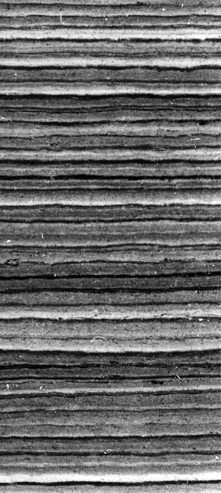
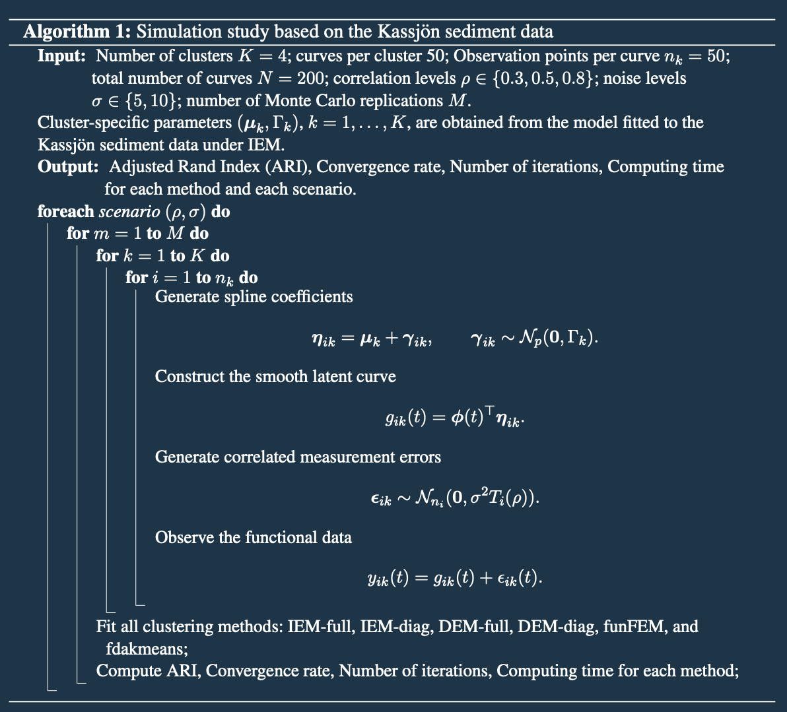
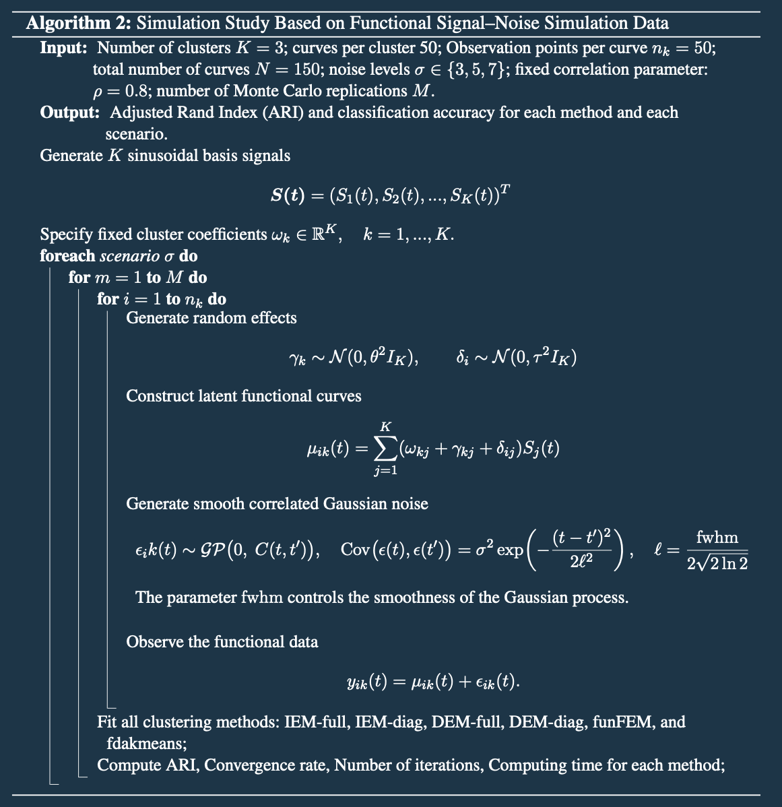
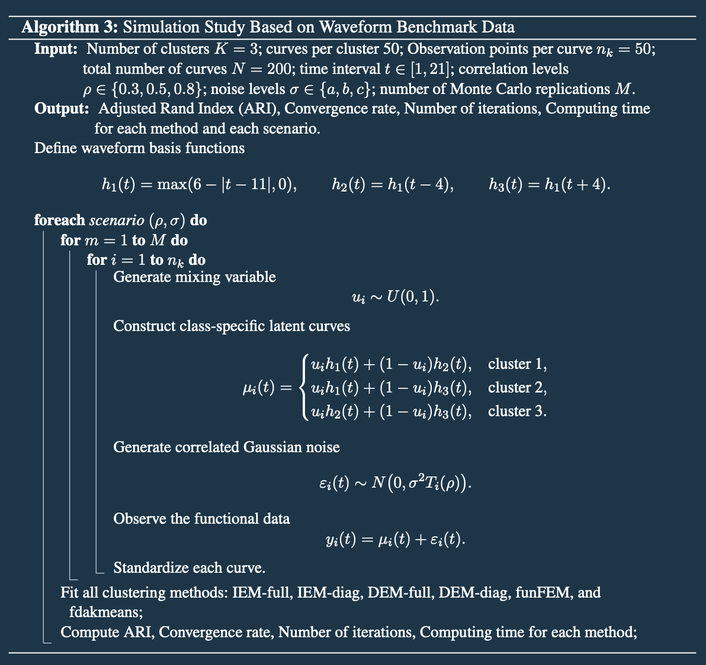

Model-Based Functional Clustering with Correlated Measurement Errors
Rana Bamdadi
Sara Sjöstedt de Luna
Per Arnqvist
Natalya Pya Arnqvist
Ruth Schneckener
Department of Mathematics and Mathematical Statistics, Umeå University
June, 2026
Rana Bamdadi


Global Temperature is Increasing


Climate Reconstruction Using Proxy Data
- Tree rings
- Ice core
- Glacier dynamics
- Lake and marine sediments

Understanding the annually laminated (varved) sediments
- The full dataset contains roughly 6,400 annual profiles, each corresponding to one year.
- These profiles were extracted from digital greyscale images of the sediment core, where each pixel has a value between 0 and 255.
- For each year, a five-pixel-wide section of the image is sampled, and the mean grey-scale values are calculated to produce the final annual profile.
Interpretation
- In spring, as the snow melts and runoff increase, minerogenic material is transported from the surrounding landscape into the lake. This produces a bright-colored layer in the sediment, representing high grey-scale values.
- During summer, organic material produced mainly by lake organisms sinks to the bottom, forming a darker layer with lower grey-scale values.
- In winter, under the ice cover, fine organic material is deposited, creating a thin dark layer, which is generally followed by the next spring’s bright mineral layer associated with snowmelt.
Finally, Varves with similar yearly profiles correspond to similar weather conditions and each varve can be represented as a function, and we aim to group them into similar climate clusters by developing model-based functional clustering methods.


Independent Error Model (IEM) (Arnqvist & Sjöstedt de Luna, 2019)
\[ y_i(t_{ij}) = g_i(t_{ij})+\epsilon_i(t_{ij}), \qquad j=1,\ldots,n_i,\quad i=1,\ldots,N \]
\(y_i(t) \rightarrow\) The observed function
\(\epsilon_i(t) \rightarrow\) iid measurement errors, normally distributed with mean zero and variance \(\sigma^2\)
\[ g_i(t) = \boldsymbol{\phi}(t)^T \boldsymbol{\eta}_i \]
\[ \boldsymbol{\eta}_i = \boldsymbol{\mu}_{z_i} + \boldsymbol{\gamma}_i \sim N_p(\boldsymbol{\mu}_{z_i},\Gamma_{z_i}) \]
\(z_i \rightarrow\) Cluster membership, \(P(z_i=k)=\pi_k\)
\(\boldsymbol{\mu}_{z_i} \rightarrow\) Vector of expected spline coefficients for a cluster
\(\boldsymbol{\gamma}_i \rightarrow\) Within-cluster variability
\(\Gamma_{z_i} \rightarrow\) Cluster-specific variability
\[ \boldsymbol{\mu}_{k} = \boldsymbol{\lambda}_{0}+ \Lambda \boldsymbol{\alpha}_{k} \]
\(\boldsymbol{\lambda}_{0} \rightarrow\) \(p\)-dimensional vector
\(\boldsymbol{\alpha}_{k} \rightarrow\) \(h\)-dimensional vector
\(\Lambda \rightarrow\) \(p \times h\) matrix, \(h \leq G-1\)

Dependent Error Model (DEM)
The measurement error process \(\epsilon_i(t)\) is modeled as a zero-mean Gaussian process with exponential covariance
\[ \operatorname{cov}\big(\epsilon_i(t), \epsilon_i(t+h)\big) = \sigma^2 e^{-\theta |h|} \]
For equidistant time points scaled to \([0,1], \quad t_{ij}-t_{i,j-1}=\frac{1}{n_i-1},\quad j=2,\ldots,n_i,\)
\[\boldsymbol{\epsilon}_i \sim N_{n_i}(0,\sigma^2 T_i(\rho))\]
where \[ T_i(\rho) = \begin{pmatrix} 1 & \rho & \rho^2 & \cdots & \rho^{n_i-1}\\ \rho & 1 & \rho & \cdots & \rho^{n_i-2}\\ \vdots & \vdots & \vdots & \ddots & \vdots\\ \rho^{n_i-1} & \rho^{n_i-2} & \rho^{n_i-3} & \cdots & 1 \end{pmatrix}. \] is an AR(1)-type correlation matrix where \(\rho = e^{\frac{-\theta}{(n_i - 1)}}.\)

Dependent Error Model (DEM)
We transform the correlated residuals into independent residuals using a Cholesky-type transformation.
Assuming \(\rho\) is known, we apply a Cholesky factorization
\[T_i^{-1}(\rho) = C_i^T(\rho)\, C_i(\rho),\]
\[ C_i(\rho) = \frac{1}{\sqrt{1 - \rho^2}} \begin{pmatrix} 1 & -\rho &0 &\cdots &0 \\ 0 & 1 & -\rho &\cdots &0 \\ \cdots& \cdots & \cdots & \cdots &\cdots \\ 0 & 0 &0 & \cdots & \sqrt{1 - \rho^2} \\ \end{pmatrix}. \]
- \(\tilde{\mathbf{y}}_i = C_i(\rho)\mathbf{y}_i,\)
- \(\tilde{\boldsymbol{\phi}}_i = C_i(\rho)\boldsymbol{\phi}_i,\)
- \(\tilde{\boldsymbol{\epsilon}}_i = C_i(\rho)\boldsymbol{\epsilon}_i\) \(\Rightarrow\tilde{\boldsymbol{\epsilon}}_i \sim N_{n_i}(0,\sigma^2 \mathbf{I}_{n_i}).\)
- Residual dependence is removed after transformation.
Then the standard IEM EM-algorithm can be applied to the transformed data.

Independent Error Model with Diagonal \(\Gamma_k\)
Same as IEM, but assumes independent variation in spline coefficients.
- \(\boldsymbol{\epsilon}_i \sim N(0, \sigma^2 I_{n_i})\)
- \(\boldsymbol{\eta}_i \sim N_p(\boldsymbol{\mu}_{z_i}, \Gamma_{z_i})\)
- \(\Gamma_{z_i} = \Gamma_k = \operatorname{diag}(\sigma_{k1}^2, \ldots, \sigma_{kp}^2)\)
Dependent Error Model with Diagonal \(\Gamma_k\)
Same as DEM, but simplifies the random-effects covariance.
- \(\boldsymbol{\epsilon}_i \sim N(\mathbf{0}, \sigma^2 T_i(\rho))\)
- \(\boldsymbol{\eta}_i \sim N_p(\boldsymbol{\mu}_{z_i}, \Gamma_{z_i})\)
- \(\Gamma_{z_i} = \Gamma_k = \operatorname{diag}(\sigma_{k1}^2, \ldots, \sigma_{kp}^2)\)





